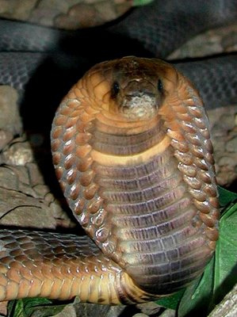

.jpg)
.jpg)

.jpg)
งูเห่าอียิปต์ (Egyptian Cobra)
ชื่อวิทยาศาสตร์: Naja haje
ลักษณะทั่วไป
เป็นหนึ่งในงูเห่าที่มีขนาดใหญ่และอันตรายที่สุดในทวีปแอฟริกา มีความสำคัญทั้งในทางชีววิทยาและประวัติศาสตร์ยุทธศาสตร์โบราณ
- มีลำตัวค่อนข้างยาว ทรงกระบอก และมีความบึกบึนแข็งแรง หัวมีลักษณะกว้างและกลมมนเรียบเนียนไปกับลำตัว ตาโตดวงกลม คล้ายมีรอยแต้มสีเข้มใต้ตาเหมือนหยดน้ำตา (Tear-drop mark)คนหาง
- ความยาวเฉลี่ยทั่วไปอยู่ที่ประมาณ 1.5 ถึง 2.0 เมตร แต่ในตัวผู้ที่เจริญเติบโตเต็มที่บางตัวอาจยาวได้ถึง 2.4 ถึง 2.6 เมตร จัดเป็นหนึ่งในงูเห่าสายพันธุ์ที่มีขนาดใหญ่ที่สุดในทวีปแอฟริกา
- บริเวณคอสามารถขยายออกเป็นแม่เบี้ยกว้างได้อย่างชัดเจนเมื่อรู้สึกถูกคุกคาม โดยแผ่ขยายออกในแนวข้างได้กว้างกว่างูเห่าหลายชนิด แต่ไม่มีลวดลายดอกจัน หรือสัญลักษณ์ใดๆ ที่ด้านหลังแม่เบี้ยเหมือนงูเห่าทางฝั่งเอเชีย
- สีผิวมีความหลากหลายสูงมากตามถิ่นที่อยู่ ตั้งแต่สีน้ำตาลทอง สีน้ำตาลแดง สีเทา จนถึงสีดำสนิท (โทนสีดำมักพบในแถบอียิปต์ตอนเหนือ) ส่วนท้องมักมีสีครีม สีเหลืองอ่อน หรือสีน้ำตาลสว่าง และบางตัวอาจมีแถบสีเข้มพาดขวางบริเวณคอด้านล่าง
- อาหารหลัก: คางคกและกบ จัดเป็นอาหารโปรดที่พบบ่อยที่สุดในธรรมชาติ
- เหยื่อชนิดอื่น: สัตว์เลี้ยงลูกด้วยนมขนาดเล็ก (เช่น หนู กระต่ายป่า), นกและไข่นก, กิ้งก่า, รวมถึงงูชนิดอื่น (รวมถึงงูพิษด้วยกันเอง)
งูเห่าอียิปต์เป็นนักล่าที่กระตือรือร้นและกินอาหารได้หลากหลาย โดยตระครุบเหยื่อแล้วฉีดพิษเข้าสู่ร่างกายเพื่อให้อัมพาตก่อนกลืนลงไป
- ช่วงเวลาหากิน: ออกหากินเป็นหลักในช่วง พลบค่ำจนถึงกลางคืน (Nocturnal & Crepuscular) เพื่อหลีกเลี่ยงความร้อนสูงในตอนกลางวัน แต่ในบางช่วงฤดูที่มีอากาศเย็น อาจพบมันออกมาผึ่งแดดหรือหากินในช่วงเช้าได้เช่นกัน
- การซ่อนตัว: เมื่อไม่ได้หากิน จะหลบซ่อนตัวอยู่ในโพรงสัตว์ที่ถูกทิ้งร้าง จอมปลวก รอยแยกของหิน ซอกกำแพง หรือถ้ำขนาดเล็ก
-
นิสัยการป้องกันตัว:
- โดยปกติจะ หลีกเลี่ยงการเผชิญหน้า และพยายามเลื้อยหนีหากมนุษย์หรือสัตว์ใหญ่เข้าใกล้
- หากถูกดักทางหรือตื่นตกใจ จะชูแม่เบี้ยสูงขึ้น ขู่ด้วยเสียงฟู่ๆ (Hissing) ที่ดังและต่อเนื่อง เพื่อเตือนศัตรู
- ไม่ลังเลที่จะฉีดพิษฉับพลันหากศัตรูยังเข้าใกล้เกินระยะปลอดภัย (งูชนิดนี้ ไม่พ่นพิษ ต้องใช้วิธีฉีดพิษผ่านเขี้ยวเท่านั้น)
- ความสามารถในการปรับตัว: ชอบอาศัยอยู่ใกล้น้ำ ทำให้พบมันว่ายน้ำได้ดี และบางครั้งอาจปีนขึ้นต้นไม้ต่ำๆ เพื่อหาไข่นกหรือล่าเหยื่อได้
ถิ่นอาศัย พิษ และความอันตราย
- ถิ่นอาศัย:
- แอฟริกาเหนือ: พบได้ตั้งแต่โมร็อกโก อัลจีเรีย ตูนิเซีย ลิเบีย ไปจนถึงประเทศอียิปต์และซูดาน
- แอฟริกาตะวันตกและแอฟริกากลาง: กระจายตัวในแถบประเทศเซเนกัล มาลี ไนเจอร์ ชาด และแคเมอรูน
- แอฟริกาตะวันออก: พบในแถบเอธิโอเปีย โซมาเลีย เคนยา และแทนซาเนีย
- ภูมิภาคตะวันออกกลาง: พบในบางพื้นที่ของคาบสมุทรอาหรับ รวมถึงบริเวณเลวานต์ เช่น จอร์แดน และอิสราเอล
- พื้นที่ทุ่งหญ้าและป่าโปร่ง (Savannas & Grasslands): เป็นแหล่งอาศัยหลักที่พบบ่อยที่สุด เพราะมีเหยื่อและที่ซ่อนตัวอุดมสมบูรณ์
- พื้นที่ใกล้แหล่งน้ำ (Wetlands & River Basins): มักพบบริเวณใกล้แม่น้ำ (เช่น ลุ่มน้ำไนล์) โอเอซิส หรือหนองน้ำ เนื่องจากงูเห่าอียิปต์ชอบกินกบและคางคก ซึ่งอาศัยอยู่ใกล้น้ำ
- พื้นที่แห้งแล้งแบบกึ่งทะเลทราย (Semiarid Steppes & Scrublands): อาศัยในทุ่งกุ่มไม้หนามหรือเนินหินที่มีพืชพรรณปกคลุมบ้าง
- พื้นที่ใกล้ชุมชนมนุษย์ (Agricultural & Urban Areas): บ่อยครั้งที่งูเห่าชนิดนี้เข้ามาใกล้พื้นที่เกษตรกรรม ฟาร์มเลี้ยงสัตว์ หรือหมู่บ้าน เพื่อออกล่าหนู สัตว์กัดฟันแทะ และสัตว์เลี้ยง ส่งผลให้เกิดการเผชิญหน้ากับมนุษย์ได้บ่อยครั้ง
- พิษ:
- พิษต่อระบบประสาท (Neurotoxin): ออกฤทธิ์ยับยั้งการส่งสัญญาณประสาทไปยังกล้ามเนื้อ (Post-synaptic neurotoxin) ทำให้ระบบกล้ามเนื้อทั่วร่างกายไม่สามารถทำงานได้
- พิษต่อเซลล์ (Cytotoxin): ทำลายเนื้อเนื้อเยื่อรอบๆ แผล ทำให้เกิดอาการปวด อักเสบ แผลเปื่อย และเนื้อตาย
- ความสามารถในการปล่อยพิษ: ในการกัด 1 ครั้ง สามารถฉีดพิษเข้าสู่ร่างกายเหยื่อได้เฉลี่ย 175–300 มิลลิกรัม (ปริมาณเพียง 15–20 มิลลิกรัมก็เพียงพอที่จะฆ่าคนตายได้)
- ลำดับอาการหลังถูกกัด (Clinical Symptoms Timeline)
- มีปวดรุนแรงทันทีบริเวณรอยแผลที่ถูกกัด ตามมาด้วยอาการบวม แดง และมีรอยบวมช้ำ
- อาจมีพุพองเป็นถุงน้ำ และเกิดภาวะเนื้อตาย (Necrosis) บริเวณแผลกัดในเวลาต่อมา
- วิงเวียนศีรษะ ปวดศีรษะ คลื่นไส้ อาเจียน และง่วงซึมอย่างหนัก
- มีน้ำลายไหล และเหงื่อออกผิดปกติ
- แขนขาอ่อนแรง ขยับไม่ได้
- ภาวะหายใจล้มเหลว (Respiratory Failure): พิษจะเริ่มลุกลามไปยังกล้ามเนื้อกะบังลมและกล้ามเนื้อยึดซี่โครง ทำให้ผู้ป่วยไม่สามารถหายใจด้วยตัวเองได้
- ภาวะช็อกและหัวใจหยุดเต้น: เลือดไม่ไปเลี้ยงสมองและหัวใจ ความดันโลหิตตกอย่างรวดเร็ว และตายจากภาวะขาดอากาศหายใจ
- ระดับความอันตราย: โคตรอันตราย ☠☠☠☠☠: จัดเป็นงูที่มีอันตรายระดับวิกฤต (Fatal Danger) แม้จะไม่พ่นพิษและไม่ใช่สัตว์ที่ดุร้ายไล่ล่ามนุษย์โดยไร้สาเหตุ แต่ด้วยพิษที่สังหารคนได้ในเวลานับชั่วโมง ร่วมกับการชอบอาศัยใกล้เขตชุมชน ทำให้มันติดอันดับงูพิษที่ส่งคนไปคุยกับรากมะม่วงมากที่สุดชนิดหนึ่งในทวีปแอฟริกา
งูเห่าอียิปต์เป็นหนึ่งในสายพันธุ์งูเห่าที่มีพื้นที่กระจายพันธุ์กว้างขวางที่สุดแห่งหนึ่งในทวีปแอฟริกาและตะวันออกกลาง:
แม้ว่าจะชื่อว่า "งูเห่าอียิปต์" แต่ ไม่ใช่สัตว์ที่อาศัยอยู่ในทะเลทรายทรายล้วน (True desert) เนื่องจากสภาพแห้งแล้งจัดเกินไป งูชนิดนี้ปรับตัวเข้ากับสภาพแวดล้อมได้หลากหลายประเภท ดังนี้:
พิษของงูเห่าอียิปต์ (Naja haje) จัดเป็นพิษที่มีความร้ายแรงสูงมากและออกฤทธิ์เร็ว โดยมีส่วนผสมหลัก 2 ชนิด ได้แก่ พิษต่อระบบประสาท (Neurotoxins) เป็นหลัก และ พิษต่อเซลล์ (Cytotoxic/Necrotic toxins) เสริมเข้ามา
1. ระยะแรก (เกิดทันที – 30 นาทีแรก):
2. ระยะกลาง (เกิดภายใน 30–60 นาที):
3. ระยะรุนแรง (เกิดภายใน 1–4 ชั่วโมง):
Fun Fact
- งูเห่าของมงกุฎฟาโรห์: สัญลักษณ์รูปงูเห่าแผ่แม่เบี้ยบนพระชฎาและมงกุฎของฟาโรห์แห่งอียิปต์โบราณ (เรียกว่า Uraeus) มีต้นแบบมาจากงูเห่าอียิปต์ โดยชาวอียิปต์เชื่อว่ามันคือตัวแทนของเทพีแวดเจต (Wadjet) ผู้ปกป้องฟาโรห์และดินแดนอียิปต์
- งูพิษสายพันธุ์สังหารพระนางคลีโอพัตรา: ตามตำนานและบันทึกของนักประวัติศาสตร์โรมัน เชื่อว่าพระนางคลีโอพัตราที่ 7 (Cleopatra VII) ปลิดชีวิตตนเองในปี 30 ก่อนคริสตกาล ด้วยการแอบซุกงูเห่าอียิปต์ไว้ในตระกร้าผลมะเดื่อเพื่อให้มันกัด เพราะพิษประสาททำให้เสียชีวิตโดยไม่มีบาดแผลฉกรรจ์บนใบหน้าหรือร่างกาย
- งูเห่าที่ไม่พ่นพิษแต่กัดแรงมาก: แม้จะจัดอยู่ในกลุ่มงูเห่าแอฟริกา แต่มัน ไม่สามารถพ่นพิษ (Spitting) เหมือนงูเห่าแอฟริกาชนิดอื่นได้ มันจึงชดเชยด้วยการฉีดพิษปริมาณมหาศาลผ่านเขี้ยวล็อคฝังเคี้ยวเพื่อความชัวร์ในการล่าเหยื่อ